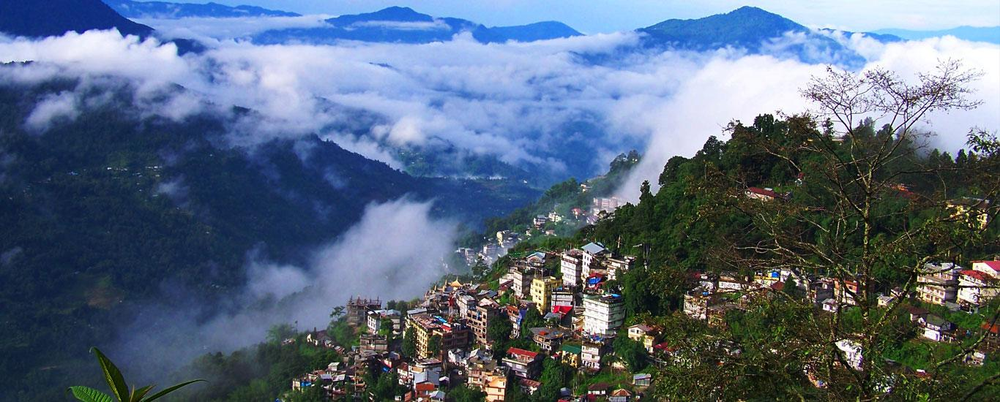

Kalimpong is a beautiful place of grate attraction. This sleepy little town situated at an altitude of 1,200
mtrs, some 50 kms to the east of Darjeeling. It once used to be the hub of the trans-Himalayan trade between
India and Tibet when merchants used to ferry commerce by mule caravan over the Jelepla pass on the
Sikkim-Tibet border.
The places to visit are Kalimpong Arts and Craft Center for handicraft goods; Tharpa Choling Monastery, a
repository of old scriptures, and documents; Thongsa (Bhutan) Monastery, the oldest in the area; Dharmodaya
Vihar, a Nepalese Bhuddhist Temple; Parnami Mandir and Mangal Dham; Durpin Danda from where the mountain
ranges of Sikkim, including Jelepla, Tiger Hill and the confluence of the Relli, Riang and Tista rivers can
be views Zong Dog Palri Fo Brang Monastery at Durpin Danda; deolo View Point for magnificent views: and
Kalimpong famous flower nurseries.
